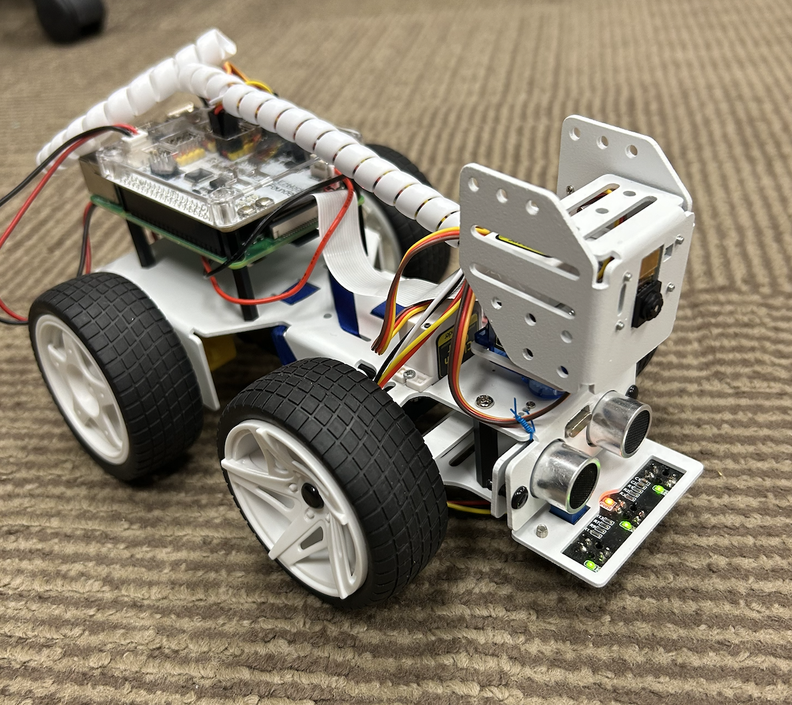

Our PiCar-X robot
We are Group 2 from CS371 at Gettysburg College.
This page documents our development of line-following code for the PiCarX-2 robot.
Team Members
- Owen Kamm
- Priyanshu Pyakurel
- William Rollo
- Darshan Aryal
- Marko Tsymbaliuk
Navigation
- Goals & Results — what we set out to do and what we achieved
- The Code — annotated source code and explanation of changes
- Worklogs — individual meeting logs for all five members
- Media — photos and video clips of the robot in action